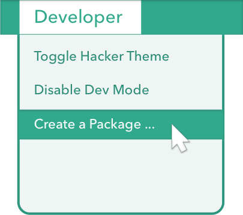

Start building on top of Nylas in minutes:
1
Install N1
Download and install Nylas for . Open it and sign in to your email account.
2
Start a Package
Packages lie at the heart of N1. The thread list, composer and other core parts of the app are packages bundled with the app, and you have access to the same set of APIs. From the Developer Menu, choose Create a Package... and name your new package.

3
See it in Action
Your new package comes with some basic code that adds a section to the message sidebar, and it's already enabled! View a message to see it in action. If you make changes to the source, choose View > Refresh to see your changes in N1.
A
Explore the source

Nylas is built on the modern web - packages are written in CoffeeScript or JavaScript. Packages are a lot like node modules, with their own source, assets, and tests. Check out yours in ~/.nylas/dev/packages.
B
Run the specs

In N1, select Developer > Run Package Specs... from the menu to run your package's new specs. Nylas and its packages use the Jasmine testing framework.
If you followed the first part of our Getting Started Guide, you should have a brand new package just waiting to be explored.
This sample package simply adds the name of the currently focused contact to the sidebar:

We're going to build on this to show the sender's Gravatar image in the sidebar, instead of just their name. You can check out the full code for the package in the sample packages repository.
Find the package source in ~/.nylas/dev/packages and open the contents in your favorite text editor.
We use CJSX, a CoffeeScript syntax for JSX, to streamline our package code.
For syntax highlighting, we recommend Babel for Sublime, or the CJSX Language Atom package.
Changing the data
Let's poke around and change what the sidebar displays.
You'll find the code responsible for the sidebar in lib/my-message-sidebar.cjsx. Take a look at the render method -- this generates the content which appears in the sidebar.
(How does it get in the sidebar? See Interface Concepts and look at main.cjsx for clues. We'll dive into this more later in the guide.)
We can change the sidebar to display the contact's email address as well. Check out the Contact attributes and change the _renderContent method to display more information:
_renderContent: =>
<div className="header">
<h1>Hi, {@state.contact.name} ({@state.contact.email})!</h1>
</div>
After making changes to the package, reload N1 by going to View > Reload.
Installing a dependency
Now we've figured out how to show the contact's email address, we can use that to generate the Gravatar for the contact. However, as per the Gravatar documentation, we need to be able to calculate the MD5 hash for an email address first.
Let's install the md5 package and save it as a dependency in our package.json:
$ npm install md5
Installing other dependencies works the same way.
Now, add the md5 requirement in my-message-sidebar.cjsx and update the _renderContent method to show the md5 hash:
md5 = require 'md5'
class MyMessageSidebar extends React.Component
@displayName: 'MyMessageSidebar'
...
_renderContent: =>
<div className="header">
{md5(@state.contact.email)}
</div>
JSX Tip: The {..} syntax is used for JavaScript expressions inside HTML elements. Learn more.
You should see the MD5 hash appear in the sidebar (after you reload N1):

Let's Render!
Turning the MD5 hash into a Gravatar image is simple. We need to add an <img> tag to the rendered HTML:
_renderContent =>
<div className="header">
<img src={'http://www.gravatar.com/avatar/' + md5(@state.contact.email)}/>
</div>
Now the Gravatar image associated with the currently focused contact appears in the sidebar. If there's no image available, the Gravatar default will show; you can add parameters to your image tag to change the default behavior.

Styling
Adding styles to our Gravatar image is a matter of editing stylesheets/main.less and applying the class to our img tag. Let's make it round:
stylesheets/main.less
.gravatar {
border-radius: 45px;
border: 2px solid #ccc;
}
lib/my-message-sidebar.cjsx
_renderContent =>
gravatar = "http://www.gravatar.com/avatar/" + md5(@state.contact.email)
<div className="header">
<img src={gravatar} className="gravatar"/>
</div>
React Tip: Remember to use DOM property names, i.e. className instead of class.
You'll see these styles reflected in your sidebar.

If you're a fan of using the Chrome Developer Tools to tinker with styles, no fear; they work in N1, too. Open them by going to Developer > Toggle Developer Tools. You'll also find them helpful for debugging in the event that your package isn't behaving as expected.
Building on the previous part of our Getting Started guide, we're going to introduce a data store to give our sidebar superpowers.
Stores and Data Flow
The Nylas data model revolves around a central DatabaseStore and lightweight Models that represent data with a particular schema. This works a lot like ActiveRecord, SQLAlchemy and other "smart model" ORMs. See the Database explanation for more details.
Using the Flux pattern for data flow means that we set up our UI components to 'listen' to specific data stores. When those stores change, we update the state inside our component, and re-render the view.
We've already used this (without realizing) in the Gravatar sidebar example:
componentDidMount: =>
@unsubscribe = FocusedContactsStore.listen(@_onChange)
...
_onChange: =>
@setState(@_getStateFromStores())
_getStateFromStores: =>
contact: FocusedContactsStore.focusedContact()
In this case, the sidebar listens to the FocusedContactsStore, which updates when the person selected in the conversation changes. This triggers the _onChange method which updates the component state; this causes React to render the view with the new state.
To add more depth to our sidebar package, we need to:
- Create our own data store which will listen to
FocusedContactsStore
- Extend our data store to do additional things with the contact data
- Update our sidebar to listen to, and display data from, the new store.
In this guide, we'll fetch the GitHub profile for the currently focused contact and display a link to it, using the GitHub API.
Creating the Store
The boilerplate to create a new store which listens to FocusedContactsStore looks like this:
lib/github-user-store.coffee
Reflux = require 'reflux'
{FocusedContactsStore} = require 'nylas-exports'
module.exports =
GithubUserStore = Reflux.createStore
init: ->
@listenTo FocusedContactsStore, @_onFocusedContactChanged
_onFocusedContactChanged: ->
@trigger(@)
(Note: You'll need to set up the reflux dependency.)
You should be able to drop this store into the sidebar example's componentDidMount method -- all it does is listen for the FocusedContactsStore to change, and then trigger its own event.
Let's build this out to retrieve some new data based on the focused contact, and expose it via a UI component.
Getting Data In
We'll expand the _onFocusedContactChanged method to do something when the focused contact changes. In this case, we'll see if there's a GitHub profile for that user, and display some information if there is.
request = require 'request'
GithubUserStore = Reflux.createStore
init: ->
@_profile = null
@listenTo FocusedContactsStore, @_onFocusedContactChanged
getProfile: ->
@_profile
_onFocusedContactChanged: ->
contact = FocusedContactsStore.focusedContact()
@_profile = null
if contact
@_fetchGithubProfile(contact.email)
@trigger(@)
_fetchGithubProfile: (email) ->
@_makeRequest "https://api.github.com/search/users?q=#{email}", (err, resp, data) =>
console.warn(data.message) if data.message?
github = data?.items?[0] ? false
if github
@_profile = github
console.log(github)
@trigger(@)
_makeRequest: (url, callback) ->
request({url: url, headers: {'User-Agent': 'request'}, json: true}, callback)
The console.log line should show the GitHub profile for a contact (if they have one!) inside the Developer Tools Console, which you can enable at Developer > Toggle Developer Tools.
You may run into rate-limiting issues with the GitHub API; to avoid these, you can add authentication with a pre-baked token by modifying the HTTP request your store makes. Caution! Use this for local development only. You could also try implementing a simple cache to avoid making the same request multiple times.
Display Time
To display this new data in the sidebar, we need to make sure our component is listening to the store, and load the appropriate state when it changes.
class GithubSidebar extends React.Component
...
componentDidMount: =>
@unsubscribe = GithubUserStore.listen(@_onChange)
_onChange: =>
@setState(@_getStateFromStores())
_getStateFromStores: =>
github: GithubUserStore.getProfile()
Now we can access @state.github (which is the GitHub user profile object), and display the information it contains by updating the render and renderContent methods.
For example:
_renderContent: =>
<img className="github" src={@state.github.avatar_url}/> <a href={@state.github.html_url}>GitHub</a>
Extending The Store
To make this package more compelling, we can extend the store to make further API requests and fetch more data about the user. Passing this data back to the UI component follows exactly the same pattern as the barebones data shown above, so we'll leave it as an exercise for the reader. :)
You can find a more extensive version of this example in our sample packages repository.